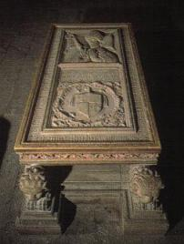

|
|
|||
|
|
||||
|
Sala Capitular Gótica. |
||||
| Desde el interior del templo e
ingresa a la sala capitular por la Capilla de la Piedad, erigida,
precisamente, para conectar ambos espacios. El acceso se realiza a
través de un arco conopial ricamente labrado, con decoraciones en el
vértice del arco y en la base de la arquivolta. La sala capitular se inició en el siglo XIV, en la época de Pere Morey, finalizándose luego con la intervención de Guillem Sagrera. Así pues estuvieron presentes en esta obra los dos arquitectos en el portal del Mirador. El estilo de esta sala se hermana con el de la sacristía de Vermells, más tardía, con la que comunica. Destinada a las reuniones del cabildo catedralicio, es una espaciosa estancia de planta trapezoidal, cubierta con bóveda de crucería y con alguna de sus claves decoradas y con restos de policromía posterior. La restauración ejecutada en 1974 dejó al descubierto los dos ventanales. Tapiados en el seiscientos. Con la reforma barroca, a fines del siglo XVII e inicios del XVIII, se abrieron en la pieza tres portadas en correspondencia con los nuevos espacios creados: la de la sala capitular barroca y la del claustro. El tercer ingreso da paso al Archivo Capitular. La portada del claustro se realza con le frontón curvo y mixtilíneo, coronado con bolas y con el relieve de San Ramón de Penyafort entre cartela floral y venera, con líneas de agua a sus pies. |
||||
|
|
En el centro de la sala capitular se halla el sepulcro de quien contribuyo económicamente a su finalización, el del obispo Gil Sánchez Muñoz, antipapa durante el Cisma de Occidente con el nombre de Clemente VIII. En una losa, rodeada de follaje y sustentada sobre cuatro monumentales leones, aparece en doble recuadro el retrato de busto del difunto, un verdadero retrato como permite suponer las máscaras funerarias de cera del difunto que se hallaban en poder del comanditario de la tumba. | |||
| En la orla de la losa una
inscripción en latín alude al llanto que la muerte del obispo, ocurrida
en 1477, causó: Cuando Gil dejó esta vida, la clerecía le lloró
amargamente, lo lamentaron los ciudadanos, los pobres lo sintieron, y ni
las vírgenes todas, ni las matronas contener sus lágrimas no pudieron.
Murió el veinte y ocho de diciembre de 1447. Sánchez Muñoz en 1435 había desmantelado las sinagogas judías, ejerciendo el nepotismo, pues trajo a la diócesis de Mallorca una corte familiar que no debió defraudarle; uno de sus miembros costeó el sepulcro y otro una emotiva lápida empotrada en el muro. Su comportamiento dejó un mal recuerdo en el cabildo catedralicio, originando todo tipo de leyendas; aún hoy, descolorido por el paso del tiempo, cuelga del techo, sobre el sepulcro, su supuesto capelo cardenalicio. En lo que atañe al museo, aparte de algún mueble y de un sarcófago del trescientos, en madera policromada originario del desaparecido convento de Santo Domingo en Palma. El resto lo compone la pintura. Destaca en primer lugar el retablo de Santa Eulalia de Mérida, que proviene de la primitiva capilla abierta en el ábside mayor, donde posiblemente estuvo hasta 1887. Es el retablo más antiguo que se muestra, del segundo cuarto del XIV. Se trata de una gran tabla cuadrangular apaisada, con cinco calles separadas por pintura y subrayadas por el remate de las cumbreras, con representaciones del los apóstoles. La calle central, en realce, ofrece la figura de Santa Eulalia sobre peana con la palma del martirio y el evangelio. Muy descriptivas son las calles laterales, moduladas en dos tramos verticales y con un total de diez y seis pequeños compartimentos, ocho por lado, que se leen de arriba abajo. Narran minuciosamente el interrogatorio de Santa Eulalia, sus torturas con la flagelación, la inmersión en cal viva, la mutilación y la crucifixión entre otras, y también su martirio y su entierro. Es obra de influencia italiana, relacionada con el pintor Duccio. Junto al retablo descrito se halla La Anunciación de María, dos tablas unidas y muy deterioradas porque hasta 926 estuvieron sujetas, por multitud de clavos, al órgano, donde se empleaban como forro del balcón interior. Es una obra de simetría central, con fondo de paisaje en el eje y de arquitectura en os laterales. Data de fines del siglo XV y se atribuye a Pere Terrencs, un pintor mallorquín formado en Valencia. Ciudad con la que Palma mantenía intensas relaciones, artísticas y comerciales, en la segunda mitad del siglo XV. |
||||
| La calle central, en realce, ofrece la figura de Santa Eulalia sobre
peana con la palma del martirio y el evangelio. Muy descriptivas son las
calles laterales, moduladas en dos tramos verticales y con un total de
diez y seis pequeños compartimentos, ocho por lado, que se leen de
arriba abajo. Narran minuciosamente el interrogatorio de Santa Eulalia,
sus torturas con la flagelación, la inmersión en cal viva, la mutilación
y la crucifixión entre otras, y también su martirio y su entierro. Es
obra de influencia italiana, relacionada con el pintor Duccio. Junto al retablo descrito se halla La Anunciación de María, dos tablas unidas y muy deterioradas porque hasta 926 estuvieron sujetas, por multitud de clavos, al órgano, donde se empleaban como forro del balcón interior. Es una obra de simetría central, con fondo de paisaje en el eje y de arquitectura en os laterales. Data de fines del siglo XV y se atribuye a Pere Terrencs, un pintor mallorquín formado en Valencia. Ciudad con la que Palma mantenía intensas relaciones, artísticas y comerciales, en la segunda mitad del siglo XV. |
 | |||
| En la pared correspondiente al claustro se ubican la predela de Santa
Elena y San Guillermo y la tabla de Santa Margarita. La predela en
cuestión es lo único que queda de un retablo de fines del trescientos,
que probablemente estaba en la actual capilla de San Antonio de Padua.
De las ocho escenas que contiene, cada una de las mitades se dedica a
los santos mencionados. Las de Santa Elena narran, dispuestas en orden
inverso, la leyenda de la Vera Cruz, que cuenta la historia de la cruz
de Cristo durante el reinado de Constantino, hijo de Santa Elena, en el
siglo IV. Los episodios de San Guillermo son de carácter biográfico. La
predela es de finales del siglo XIV. La tabla de Sana Margarita, obra de la segunda mitad del siglo XV atribuida a Rafael Moguer, presenta a la santa de cuerpo entero contra un fondo brocado de oro; la tabla se encuadra entre columnas tersas y arco apuntado con el interior festoneado. Interesantes son las dos tablas votivas, dispuestas juntas, relativas a La Crucifixión y a La Virgen del Manto. Ambas datan del siglo XV y se han atribuido a un mismo maestro. Una inscripción en al parte inferior de cada una aclara el motivo de su hechura, por causa en la torrencial y catastrófica tormenta nocturna, acaecida en 1403 3n Palma, cuyas víctimas fueron solemnemente enterradas, sin distinción de clase, en la Catedral. La tabla de La crucifixión, con Cristo entre las Santas Mujeres y San Juan, esta llena de multitud de personajes. Es la otra obra, la Virgen del Manto, que en el área catalana recibe el nombre de Virgen de la Merced, cobija bajo su desplegado manto a personajes en actitud de plegaria. En lo alto del muro se localiza una tabla apaisada de fines del siglo XV, vinculada a Joan Desi, simbólicamente alude a la limosna que el clero daba en la Casa de la Almoina. Cristo, en el centro, está acompañado por dos hombres y dos mujeres, pobre y maltrechos. La inscripción latina del friso superior explica la escena: Lo que haréis a uno de mis hermanos pequeños, a Mi me lo haréis. El retablo dedicado a los santos Mateo, con el hábito, y Francisco, mostrando los estigmas, tiene tres cuerpos, En el central, compartimentado en su término por dos arcos apuntados y trilobulados, se hallan los santos citados, con su nombre en el nimbo. Los cuerpos laterales contienen historias y leyendas de ambos protagonistas. Las de San Mateo son: la vocación pública representada como una escena de mercado; la sumisión de los dragones ante el rey de Etiopía y la evangelización del pueblo. Las décadas a San Francisco en la iglesia de San Damián; el Santo abandonando todos sus bienes delante del obispo de Asís e Inocencio III viendo en sueños como San Francisco sostiene la basílica de Setrán. Las cumbreras acogen en el centro La Crucifixión entre la Marías y San Juan y en las laterales, La Anunciación. De autor desconocido, debe situarse en el último tercio del siglo XIV. Emparejadas por su situación con el retablo de Santa Eulalia, aparecen las tablas de San Silvestre y de San Sebastián. La primera es de inicios del siglo XIV, la segunda de fines del XV, ambas proceden de antiguas capillas catedralicias. La tabla de San Sebastián, a diferencia del resto de las obras del Museo, es un oleo sobre madera, no temple. Se ha atribuido a un maestro castellano: Alonso Sedano, que en viaje desde Nápoles, la pintaría hacia 1480 o 1490. Tiene detalles, renacentistas como la columna central y el volumen del cuerpo de San Sebastián. Contra un fondo de paisaje, el santo atado es asaeteado sin que ello interfiera en su cuerpo, un desnudo trecentista sn expresión de color en el rostro. De la composición destaca la luminosa figura del santo, que contrasta con el cromatismo y el abigarramiento de los personajes que hieráticos, se disponen en torno a él. |
||||